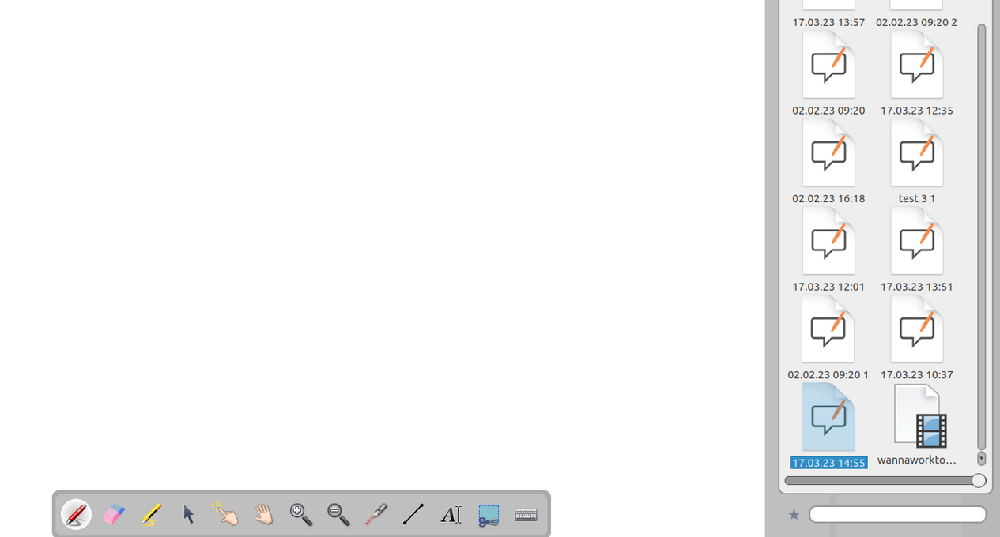

إضافة مستندات OpenBoard إلى المفضلة
أُضيفت هذه الميزة في الإصدار 1.7, وتتيح لك إضافة مستندات OpenBoard إلى المفضلة.
للقيام بذلك، انتقل إلى وضع المستندات, وحدد مستنداً ثم انقر على
 في شريط الأدوات.
في شريط الأدوات.

التنقل بسرعة من مستند إلى آخر
تظهر مستنداتك المفضلة في مكتبة OpenBoard, ضمن
 .
.
كل مستند مفضل
 يمكن سحبه وإفلاته مباشرة على اللوحة.
يمكن سحبه وإفلاته مباشرة على اللوحة.

المستندات المفتوحة مؤخراً
يُضاف كل مستند يتم فتحه مؤقتاً إلى المفضلة، مما يتيح لك التنقل بسرعة بين المستندات خلال الجلسة نفسها دون الحاجة إلى إضافتها يدوياً.
